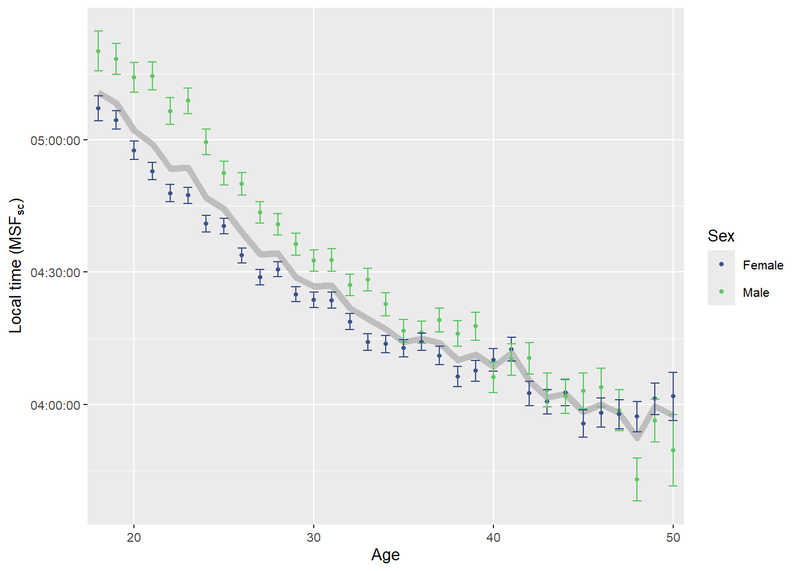
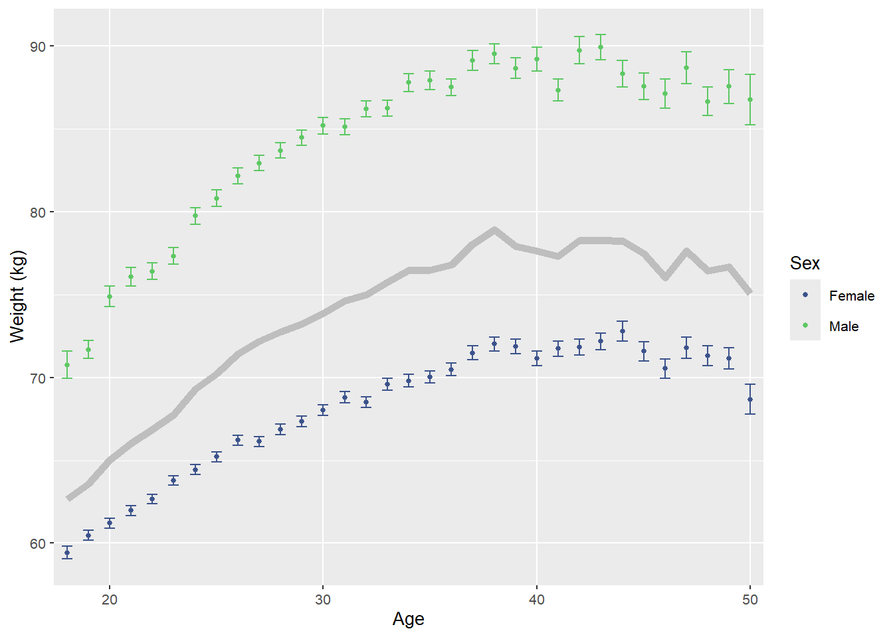
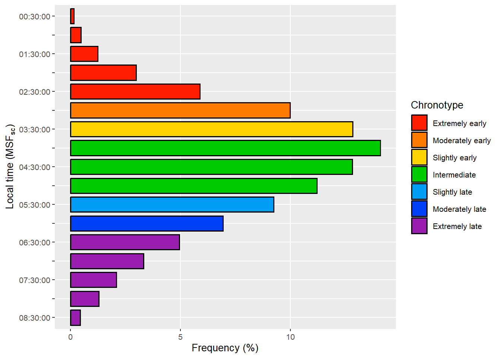
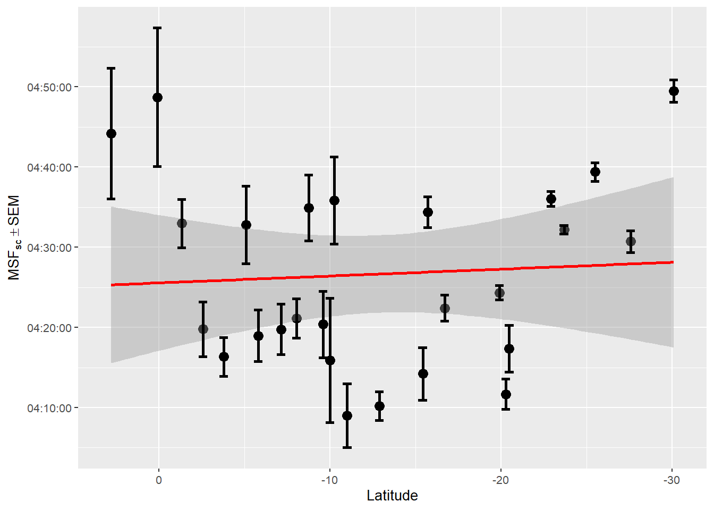

You are reading the work-in-progress of this thesis.
This chapter should be readable but is currently undergoing final polishing.
B.1 Data munging
The data wrangling processes were performed using the targets R package. The full pipeline can be seen in the _targets.R file at the root of the research compendium.
Figure B.5: Relation between age and chronotype, divided by sex. Chronotype is represented by the local time of the sleep corrected midpoint between sleep onset and sleep end on work-free days (MSFsc), MCTQ proxy for measuring the chronotype. The gray line represents both sex. Vertical lines represent the standard error of the mean (SEM).

Source: Created by the author. Based on data visualization found in Roenneberg et al. (2007).
Figure B.6: Relation between age and weight (kg), divided by sex. The gray line represents both sex. Vertical lines represent the standard error of the mean (SEM).

Source: Created by the author. Based on data visualization found in Roenneberg et al. (2007).
B.7 Chronotype distribution
Code
source(here::here("R/plot_chronotype.R"))col<-"msf_sc"y_lab<-latex2exp::TeX("Local time ($MSF_{sc}$)")data|>plot_chronotype( col =col, x_lab ="Frequency (%)", y_lab =y_lab, col_width =0.8, col_border =0.6, text_size =env_vars$base_size, legend_position ="right", chronotype_cuts =FALSE)
Figure B.7: Distribution of the local time of the sleep corrected midpoint between sleep onset and sleep end on work-free days (MSFsc), MCTQ proxy for measuring the chronotype. The categorical cut-offs follow a quantile approach going from extremely early (\(0 |- 0.11\)) to the extremely late (\(0.88 - 1\)).

Source: Created by the author. Based on data visualization found in Roenneberg et al. (2019).
Figure B.8: Distribution of mean aggregates of the local time of the sleep corrected midpoint between sleep onset and sleep end on work-free days (MSFsc), MCTQ proxy for measuring the chronotype, in relation to latitude decimal degree intervals. Higher values of MSFsc indicate a tendency toward a late chronotype. The red line represents a linear regression, and the shaded area indicates a pointwise 95% confidence interval.

Source: Created by the author. Based on data visualization found in Leocadio-Miguel et al. (2017).
Table B.2: Statistics of the local time of the sleep corrected midpoint between sleep onset and sleep end on work-free days (MSFsc), MCTQ proxy for measuring the chronotype, of sample subjects
Source: Created by the author.
B.9.2 Sex
Code
# See <https://sidra.ibge.gov.br> to learn more.library(magrittr)prettycheck:::assert_internet()# Brazil's 2022 census datacensus_data<-sidrar::get_sidra(x =9514)%>%# Don't change the pipedplyr::filter(Sexo%in%c("Homens", "Mulheres", "Total"),stringr::str_detect(Idade, "^(1[8-9]|[2-9][0-9]) (ano|anos)$|^100 anos ou mais$"),.[[17]]=="Total")|>dplyr::transmute( sex =dplyr::case_when(Sexo=="Homens"~"Male",Sexo=="Mulheres"~"Female",Sexo=="Total"~"Total"), value =Valor)|>dplyr::group_by(sex)|>dplyr::summarise(n =sum(value))|>dplyr::ungroup()census_data<-dplyr::bind_rows(census_data|>dplyr::filter(sex!="Total")|>dplyr::mutate( n_rel =n/sum(n[sex!="Total"]), n_per =round(n_rel*100, 3)),census_data|>dplyr::filter(sex=="Total")|>dplyr::mutate(n_rel =1, n_per =100))|>dplyr::as_tibble()|>dplyr::arrange(sex)count<-data|>dplyr::select(sex)|>dplyr::group_by(sex)|>dplyr::summarise(n =dplyr::n())|>dplyr::ungroup()|>dplyr::mutate( n_rel =n/sum(n), n_per =round(n_rel*100, 3))|>dplyr::arrange(dplyr::desc(n_rel))|>dplyr::bind_rows(dplyr::tibble( sex ="Total", n =nrow(tidyr::drop_na(data, sex)), n_rel =1, n_per =100))count<-dplyr::left_join(count, census_data, by ="sex", suffix =c("_sample", "_census"))|>dplyr::mutate( n_rel_diff =n_rel_sample-n_rel_census, n_per_diff =n_per_sample-n_per_census)|>dplyr::relocate(sex, n_sample, n_census, n_rel_sample, n_rel_census, n_rel_diff,n_per_sample, n_per_census, n_per_diff)count|>dplyr::select(sex, n_per_sample, n_per_census, n_per_diff)
Table B.3: Sex frequencies among sample subjects compared with data from Brazil’s 2022 census
Source: Created by the author. Based on data from Brazil’s 2022 census (Instituto Brasileiro de Geografia e Estatística (n.d.-b)).
Table B.9: Residential state frequencies among sample subjects compared with data from Brazil’s 2022 census.
Source: Created by the author. Based on data from Brazil’s 2022 census (Instituto Brasileiro de Geografia e Estatística (n.d.-a)).
Instituto Brasileiro de Geografia e Estatística. (n.d.-a). Tabela 4714: População residente, área territorial e densidade demográfica [Table]. SIDRA. Retrieved November 11, 2023, from https://sidra.ibge.gov.br/Tabela/4714
Instituto Brasileiro de Geografia e Estatística. (n.d.-b). Tabela 9514: População residente, por sexo, idade e forma de declaração da idade [Tabela]. SIDRA. Retrieved November 11, 2023, from https://sidra.ibge.gov.br/tabela/9514
Leocadio-Miguel, M. A., Louzada, F. M., Duarte, L. L., Areas, R. P., Alam, M., Freire, M. V., Fontenele-Araujo, J., Menna-Barreto, L., & Pedrazzoli, M. (2017). Latitudinal cline of chronotype. Scientific Reports, 7(1), 5437. https://doi.org/10.1038/s41598-017-05797-w
Roenneberg, T., Kumar, C. J., & Merrow, M. (2007). The human circadian clock entrains to sun time. Current Biology, 17(2), R44–R45. https://doi.org/10.1016/j.cub.2006.12.011
Roenneberg, T., Wirz-Justice, A., Skene, D. J., Ancoli-Israel, S., Wright, K. P., Dijk, D.-J., Zee, P., Gorman, M. R., Winnebeck, E. C., & Klerman, E. B. (2019). Why should we abolish daylight saving time? Journal of Biological Rhythms, 34(3), 227–230. https://doi.org/10.1177/0748730419854197